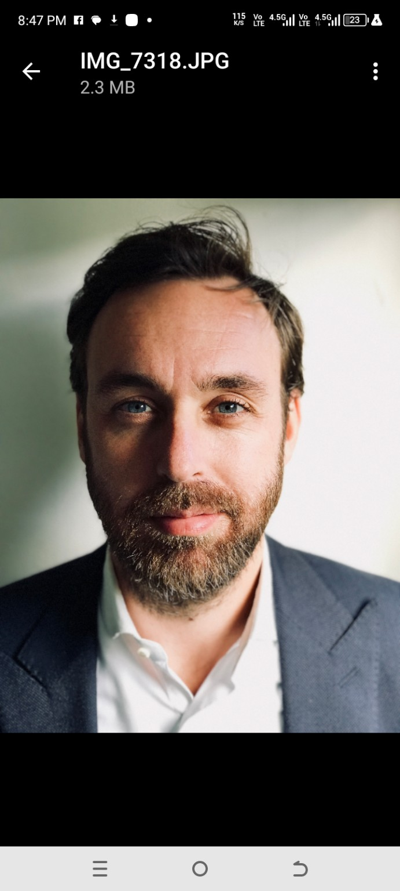
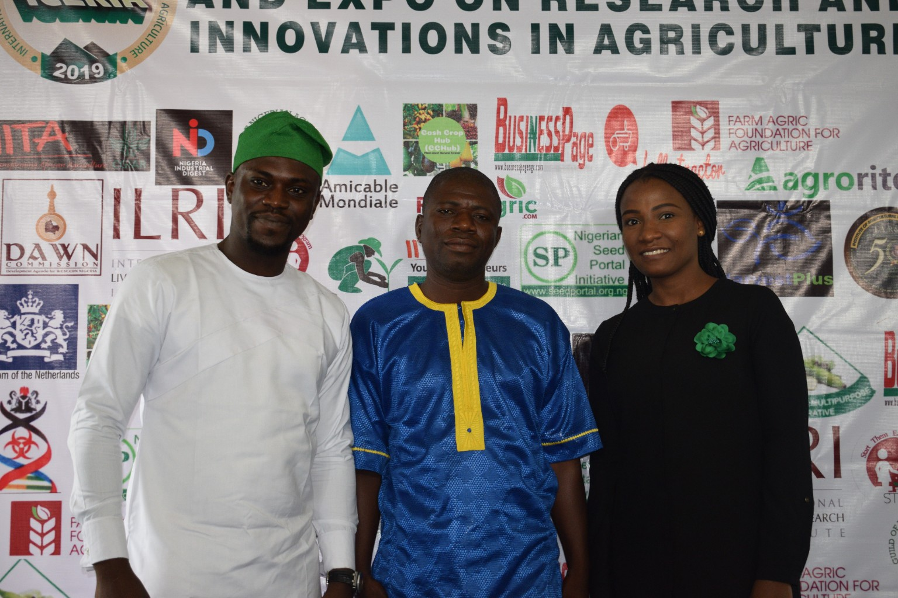
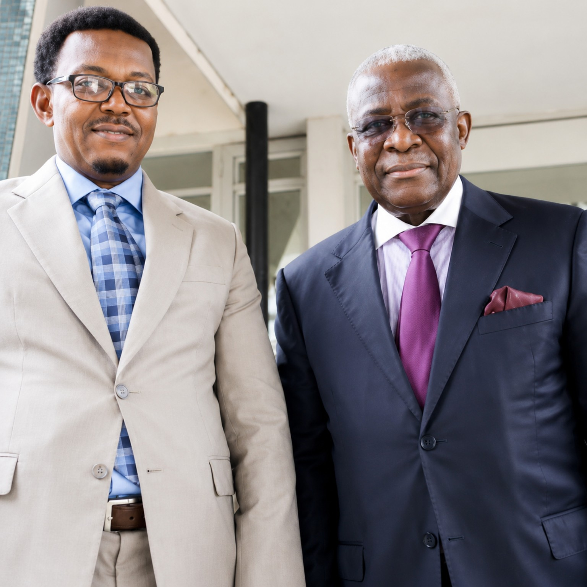

DOCUMENTED ECOSYSTEM
Research, development and knowledge ecosystem
Selected institutional identities documented in the ICERIA record. These marks represent organisations associated with the historical ecosystem; they should not be read as confirmation of ICERIA 2027 partnership.
ADDITIONAL DOCUMENTED INSTITUTIONS
National, development and enterprise ecosystem
These organisations are retained as documented ecosystem or participation references. Their inclusion does not imply a confirmed ICERIA 2027 commitment.
National Agricultural Seeds Council (NASC)
Raw Materials Research and Development Council (RMRDC)
Embassy of the Kingdom of the Netherlands
OFAB Nigeria Chapter
Open Forum on Agricultural Biotechnology. Official website ↗
DAWN Commission
Development Agenda for Western Nigeria. Official website ↗
AFEX Commodities Exchange
Guild of Nigerian Agriculture Journalists (GNAJ)
IITA Youth Agripreneurs (IYA) & YIIFSWA-II
Documented within the IITA/ICERIA participation record. IITA website ↗
Important distinction: Historical participation and ecosystem references are preserved here as part of the ICERIA record. Confirmed ICERIA 2027 partners and supporters will be identified separately as formal commitments are received.
DOCUMENTED PEOPLE
Participation preserved in the ICERIA record

Bram Wits
Regional Agricultural Counsellor for West Africa, Embassy of the Kingdom of the Netherlands (West Africa regional context including Ghana). Preserved in the ICERIA 2020 visual record.

IITA participation
ICERIA 2019 included participation by IITA's communication, Business Incubation Platform and YIIFSWA-II teams.

Dr. Kanayo Nwanze
Former President of the International Fund for Agricultural Development (IFAD), associated with the ICERIA journey and its institutional record.